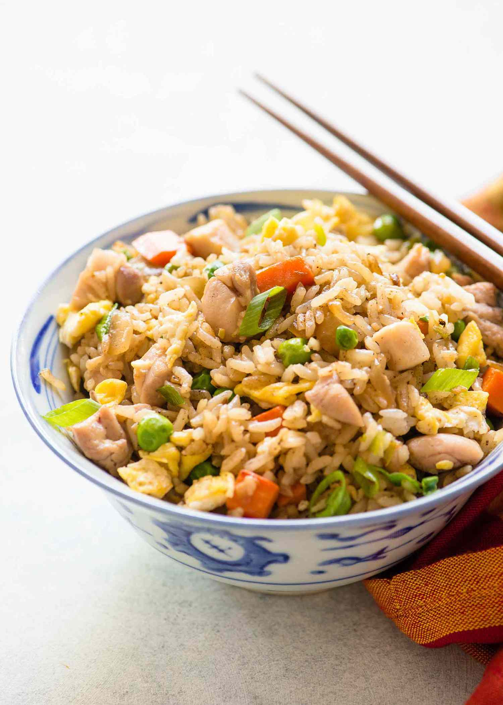

Chicken Fried Rice

Description
Chicken fried rice is a simple but satisfying meal.
Use leftover vegetables to create a healthy element.
Ingredients
- 1 lb chicken
- 2 cups day old cooked rice
- soy sauce
- 3 carrots
- 1 cup peas
- 1 medium onion
- olive oil
Steps
- Fry diced chicken in a pan with oil for 6 minutes
- Add all chopped veggies with more oil and fry for 5 miutes
- Set aside contets of pan
- Fry rice in oil for 3 minutes
- Pour soy sauce on rice and fry for 1 minute or until coated
- Add chicken and veggies to pan and fry all with more soy to taste
- Serve hot